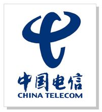
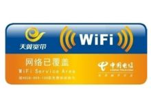

- 公司名称
- 中国电信集团公司
- 外文名称
- China Telecom
- 总部地点
- 北京市西城区金融街31号
- 成立时间
- 2000年9月
- 经营范围
- 固定通信业务，移动通信业务
- 公司性质
- 国有独资
- 年营业额
- 62046.8百万美元(2014年)
- 员工数
- 414673人（2014年）
- 注册资本
- 1580亿元人民币
- 净 利
- 1555.8百万美元（2014年）
- 世界500强
- 第154位（2014年）
- 董事长
- 常小兵
- 总经理
- 杨杰
- 服务电话
- 10000
目录
- 1 公司简介
- 2 企业标识
- 3 服务品牌
- ▪ 天翼
- ▪ 天翼飞Young
- ▪ 天翼e家
- ▪ 天翼领航
- ▪ 天翼WIFI
- 4 服务号段
- 5 业务发展
- 6 管理层
- 7 子公司
- 8 事业单位
- 9 业务概览
- 10 电信产品
- 11 综合信息应用
- ▪ 号码百事通
- ▪ 互联星空
- ▪ 携号转网
- ▪ IPTV
- ▪ 新视通
- ▪ 全球眼
- ▪ 会易通
- ▪ 无线市话
- ▪ 网元出租业务
- ▪ APIX业务
- ▪ 应急通信业务
- 12 公司历史
- 13 其他概述
- ▪ 企业文化
- ▪ 研发体系
- ▪ 人力资源
- ▪ 海外拓展
公司简介
中国电信集团公司是我国特大型国有通信企业、上海世博会全球合作伙伴，连续多年入选"世界500强企业"，主要经营固定电话、移动通信、卫星通信、互联网接入及应用等综合信息服务。截至2011年上半年，拥有固定电话用户1.94亿户，移动电话用户（CDMA）6236万户，宽带用户 6174万户；集团公司总资产6322亿元，人员67万人。
中国电信集团公司在全国 31个省（区、市）和美洲、欧洲、香港、澳门等地设有分支机构，拥有覆盖全国城乡、通达世界各地的通信信息服务网络，建成了全球规模最大、国内商用最早、覆盖最广的CDMA 3G网络，旗下拥有"天翼"、"我的e家"、"商务领航"、"号码百事通"等知名品牌，具备电信全业务、多产品融合的服务能力和渠道体系。公司下属"中国电信股份有限公司"和"中国通信服务股份有限公司"两大控股上市公司，形成了主业和辅业双股份的运营架构，中国电信股份有限公司于 2002年在香港纽约上市、中国通信服务股份有限公司于 2006年在香港上市。
中国电信自 2004年提出由传统基础网络运营商向综合信息服务提供商转型以来，通过大力发展综合信息服务等非语音业务，强化精确管理，优化资源配置，保持了企业持续稳定健康发展。特别是2008年历经电信体制改革、获得移动业务牌照，2009年获得3G业务牌照以来，公司大力推进聚集客户的信息化创新战略和差异化发展策略，成功进入移动市场，实现了全业务发展的良好开局。2010年全集团完成经营收入2428.96亿元（含初装费），同比增长9.77%，非话音收入占经营收入比重达到52.8%，同比增长6.8个百分点。
在追求企业价值增长的同时，中国电信集团公司坚持企业与社会、环境及利益相关者和谐共生，认真履行企业社会责任，积极向社会提供就业岗位，热心参与公益事业，自觉承担扶贫援藏任务，广泛开展节能减排活动，认真落实共建共享政策，保护行业"生态环境"，避免资源浪费和重复建设，圆满完成了抗震救灾、北京奥运会等重大通信保障任务。作为我国信息化建设的主力军，中国电信集团公司大力开发和推广信息化应用，以全新的多业务、多网络、多终端融合及价值链延伸，努力使信息化成果惠及社会各行业和广大人民群众。先后为 20多个行业和广大企业提供针对性的信息化解决方案，在江苏无锡成立物联网应用和推广中心、物联网技术重点实验室；认真履行电信普遍服务义务，积极服务"三农"，持续推进"村村通电话"工程和"千乡万村"信息化示范工程；主动为广大百姓提供"衣食住行用"等各方面的综合信息服务，为推动信息化与工业化融合，加快农村信息化建设，方便百姓享受信息新生活做出了应有贡献。
在新的征程中，中国电信集团公司将牢牢把握3G、移动互联网、物联网等发展机遇，深入落实科学发展观，大力实施聚焦客户的信息化创新战略和差异化发展策略，持续深化企业转型，积极转变发展方式，加大结构调整力度，不断强化精确管理，努力开创有效益规模发展的新局面，实现服务信息化的新突破，为国民经济发展和社会信息化建设做出更大贡献。
企业标识

中国电信
中国电信企业标志由国内品牌咨询与设计公司正邦于2008年设计，中国电信的企业标识整体造型质朴简约、线条流畅、富有动感。以中国电信的英文首个字母C的趋势线进行变化组合，似张开的双臂，又似充满活力的牛头和振翅飞翔的和平鸽，具有强烈的时代感和视觉冲击力。传递出我们的自信和热情，象征着四通八达，畅通、高效的电信网络连接着每一个角落，服务更多的用户；表达了我们“用户至上、用心服务”的服务理念，体现了与用户手拉手、心连心的美好情感。同时，也蕴含着企业全面创新、求真务实，不断超越的精神风貌，展现了企业与时俱进、奋发向上、蓬勃发展，致力于创造美好生活的良好愿景。经纬度的两个C，象征着中国电信国际业务的布局，而且通过黄金分割方法的运用使得整个标志在动感中又具有沉稳属性。
中国电信的企业标识以代表高科技、创新、 进步的蓝色为主色调。文字采用书法体，显得有生命力、感染力和亲和力，与国际化的标识相衬，使古典与现代融为一体、传统与时尚交相辉映。
服务品牌
天翼
“天翼”的中文名称和飞翔、翅膀、天空直观相关，体现了自由自在的移动体验和广阔的覆盖；“天翼”与“添翼”谐音，寓意用户使用中国电信的移动业务后如虎添翼，可以更畅快地体验移动信息服务，享受更高品质、更自由的信息新生活。 “天翼”为中国电信发展3G业务而诞生的一个品牌，最早由邓超代言，向广大手机使用者宣传其健康、高速、便捷、无线等为特点的3G网络，从而向客户介绍并选择CDMA2000为网络制式的3G网络。
天翼飞Young
“天翼飞Young”是中国电信的商业主品牌——天翼旗下的个人品牌，主要针对年轻时尚用户。是中国电信面向校园内大中专学生以及校园外年轻人群推出的3G 套餐，具有3G 消费门槛低，手机上网、WiFi上网、短信等增值业务优惠且内容丰富，与智能手机结合能够全方位满足用户通信及移动互联网信息需求等特征。
天翼e家
天翼领航
中国电信今天宣布推出“天翼领航”品牌，主要面向中小企业信息化市场，这是中国电信继“天翼飞Young”、“天翼e家”之后第三个客户品牌。
中国电信针对企业业务原品牌为“商务领航”，此次推出的“天翼领航”品牌实际上是“商务领航”品牌的延续和提升。2012年2月，中国电信开始将各种业务品牌都改名为“天翼”旗下子品牌，包括面向年轻个人用户推出的“天翼飞Young”、面向家庭用户推出的“天翼e家”。
天翼领航是中国电信面向企业客户推出的客户品牌，以”融合信息应用，远见成就价值”为品牌核心内涵， 全面支持企业客户提升信息化水平、降低成本、提高效率、增加商业机会、创新产品、改善客户服务、防范经营风险、促进业务增长。
图册
(4张)
天翼领航通信应用：针对中小企业的多样化通信需求，为客户提供的集本地话费超值优惠、月租费减免、固定电话移动电话互拨优惠、便捷的企业总机等功能的通信解决方案。
天翼领航信息应用：针对中小企业客户对网络通信、信息服务及网络维护服务的整体服务需求，通过中国电信为客户专门定制的、可管理的企业网关， 为客户提供的集固定、移动话音及总机服务、互联网宽带接入、移动上网信息服务及维护服务为一体的综合解决方案。
天翼领航行业应用：针对各类型客户生产、管理、服务工作中的实际需求，依托中国电信覆盖广泛的固定、移动通信网络及对各行业的深入理解， 将信息通信能力或资源嵌入客户的流程，为客户量身定制的综合信息化应用解决方案。
天翼WIFI

WiFi
中国电信天翼宽带WiFi客户端是针对中国电信天翼宽带WiFi业务定制开发的拨号软件客户端。中国电信天翼宽带WiFi用户在国外仍可使用，客户端将自动搜索当前中国电信合作伙伴的热点，会给您主动提示，只要使用可国际漫游的帐号登录即可。 支持Android1.6以上操作系统的智能终端，在无线网络信号名称为ChinaNet的网络覆盖区域内，连接后即可畅游无线互联网。
服务号段
另外1349为中国电信集团卫星通信有限公司卫星电话号段。
业务发展
2011年，中国电信集团公司不断提升全业务经营能力，圆满完成重点市场经营工作任务，全业务经营拓展取得新突破。
收入保持较好增长，规模拓展实现新突破。2011年，集团实现合并经营收入2,920.24亿元，同比增长12.1%，其中通信主业实现经营收入（不含初装费和终端销售）2,403.15亿元， 同比增长8.7% ；其中固网收入1,706.15亿元；移动服务收入达到697亿元， 同比增长42.6%，占通信主业营业收入比重达到29%，较上年提高6.9个百分点。2011年移动用户净增2,978万户，累计达到1.23亿户，移动用户市场份额达12.4% ；南方市场移动用户总数超越中联通；有线宽带用户达到8,515万户。2011年规模突破取得阶段成果，为下一步企业长期可持续发展奠定了有利条件。
终端引领销售模式初步形成，全业务经营能力得到提升。3,761个自营厅完成卖场化改造，厅内终端销量同比增长超过27% ；社会渠道实现局部突破，社会渠道发展移动用户占比全年平均值58.0%（其中2011年12月底为61.0%），97.4%的地市分公司实现了天翼终端在销售排名靠前的十家社会渠道零售门店中至少业务发展进驻五家的目标。截至年底，拓展引C入G门店9,752家。渠道支撑系统完成穿越测试，为龙手机引入和社会渠道拓展奠定基础。渠道能力提升推动移动用户发展天花板有所突破，2011年12月新发展用户近800万。启动“宽带中国 光网城市”战略，加快宽带提速，推出自主融合套餐，实现移动宽带双向拉动，宽带用户月均增长超过132万，优势宽带业务保持快速规模发展。
管理层
常小兵：中国电信集团公司董事长、党组书记[2]
杨杰：中国电信集团公司总经理、党组成员
吴安迪：中国电信集团公司副总经理、党组成员、总会计师
张继平：中国电信集团公司副总经理、党组成员
杨小伟：中国电信集团公司副总经理、党组成员
孙康敏：中国电信集团公司副总经理、党组成员
邵春保：中国电信集团公司党组成员、纪检组长
柯瑞文：中国电信集团公司副总经理、党组成员、工会主席
高同庆：中国电信集团公司副总经理、党组成员
子公司
中国电信股份有限公司：中国电信股份有限公司是中国电信集团公司部分资产重组后成立的上市公司，其H股分别在纽约证券交易所（以ADR形式）和香港联合交易所上市，中国电信集团公司持有该公司超过70%的股份。公司旗下设有：
中国通信服务股份有限公司：经过中国历次电信业改革之后，原中国邮电部大量的与通信网络运营无关的产业被划归于中国电信。
中卫国脉通信股份有限公司（更名号百控股）
中国电信(韩国)股份有限公司： 2012年7月20日在韩国首尔正式开业。
中国电信国际有限公司：整合原海外事业拓展部、中国电信（香港）国际有限公司，中国电信（澳门）有限公司，中国电信（美洲）有限公司（于2002年11月在美国华盛顿正式开业），中国电信（欧洲）有限公司（2006年9月12日正式在英国首都伦敦挂牌成立）的基础上组建的全资子公司，总部设于香港、北京。
北京鸿翔大厦广华物业有限公司
事业单位
业务概览
中国电信集团公司可以提供电话业务、互联网接入及应用、数据通信、视讯服务、国际及港澳台通信等多种类业务，能够满足国际、国内客户的各种通信需求。
电信产品
天翼空间产品是中国电信基于应用商店的业务模式，给开发者提供低门槛的应用开发和销售渠道，给用户提供丰富和便宜的应用获取渠道，给运营商提供了一种发展新用户、保持用户忠诚度、提高ARPU值和充分利用中国电信已有资源并融合互联网新商业模式的产品。


天翼阅读是中国电信整合各类阅读内容，满足客户阅读需求的一项业务。
189邮箱是中国电信针对C网手机用户、宽带用户提供的新一代的邮箱服务。
“爱音乐”是中国电信数字音乐业务的统一品牌。
天翼Live手机端、电脑端，统一账号轻松登陆。
中国电信通行证是面向中国电信用户提供的互联网应用（包括移动互联网应用）的统一帐号。
天翼视讯客户端产品同时向中国电信全国用户提供服务。
天翼QQ号码是腾讯公司与中国电信联合推出的一项服务，只要是中国电信180、189、133和153号段的手机用户，便可在完成必要的认证程序后，使用该手机号码作为QQ号登录和使用腾讯公司相关产品和服务。
 中国电信号簿助手
中国电信号簿助手
号簿助手是中国电信推出的安全、可靠、跨终端、跨网络的通讯录管理服务，支持手机通讯录与189邮箱、天翼宽带等业务系统的即时同步，您可以通过WEB/WAP/手机客户端等多种方式进行联系人的查询、编辑、备份和恢复，是您换机时的好帮手、管理通讯录的好助手。中国电信提供Android版、Brew版、Windows Mobile版和iOS版手机客户端。[3]
天翼手机报是一项由中国电信集团提供的资讯类业务，通过手机为用户提供各类资讯信息的服务。手机报提供的资讯包括新闻、体育、娱乐、文化、生活、财经等，并以具体报刊产品体现相关内容；用户定购了某份彩信手机报产品后，将会定期/不定期收到对应的各期报刊，每期报刊具有多个版面，一个版面内由一条或多条内容资讯组成。[5]
综合信息应用
号码百事通
是中国电信基于号码信息服务所提供的一系列增值服务，为大众客户提供“衣食住用行”等方面的一种便民信息服务。客户只要拨打业务接入号码114/118114，就可以获取诸如餐饮、旅游、指路、订房、日常消费品等生活信息服务。通过“号码百事通”将企业用户登记的企业基本信息、服务范围及产品信息等推荐给大众用户，可以帮助企业提升知名度和发掘商机。
互联星空
互联星空是中国电信互联网应用的统一业务品牌。利用中国电信的网络、用户等资源，具有“一点接入，全网服务”，“一点认证、全网通行”，“一点结算、全网收益”的优势和特点，互联星空聚合了大量SP的内容和应用，为用户提供影视、教育、游戏等丰富多彩的互联网内容和应用服务。互联星空是用户 “一站式的宽带信息与娱乐中心”，也可作为一种支付手段，使用户方便快捷地对所消费的收费内容进行支付。
携号转网
IPTV
IPTV是基于电信宽带网络，以电视机加机顶盒为主要终端设备，为用户提供互动多媒体服务的宽带增 值业务。依据市场和技术的发展，IPTV将逐步开放通信服务、互动游戏、信息服务、音视频广播、音视频点播、卡拉OK、远程教育、互动广告、录播等业务功能。用户可以得到高质量数字媒体服务；用户可有广泛的自由度选择宽带IP网上各网站提供的视频节目，实现媒体提供者和媒体消费者的实质性互动。
新视通
通过异地间图像、语音、数据等信息的实时交互远距离传输，实现多媒体视讯会议的通信服务业务。适用于集团客户在不同地方的分支机构召开会议，或者集团客户对应部门间的部门会议，也可用于政府部门系统内部的会议，以及远程教学、远程培训、远程医疗、楼宇保安监控、异地调度指挥和新闻发布广播等场合。
全球眼
网络视频监控业务是由中国电信推出的一项基于宽带网的图像远程监控、传输、存储、管理的新型增值业务。该业务系统利用中国电信无处不在的宽带网络将分散、独立的图像采集点进行联网，实现跨区域的统一监控、统一存储、统一管理，资源共享，为各行业的管理决策者提供一种全新的、直观的，扩大视觉和听觉范围的管理工具，提高工作绩效。也可通过二次应用开发，为各行业的资源再利用提供新的手段。
会易通
交互式会议电话业务：不同地点约定的拨号方式组织电话会议。会易通具有使用方便、功能丰富、安全灵活等特点，非常适合分布在不同地点的公司企业的例会或临时性的紧急会议等。
无线市话
中国电信无线市话（Personal access System）简称PAS，它采用微蜂窝技术，通过微蜂窝基站实现无线覆盖，将用户端（即无线市话手机小灵通）以无线的方式接入本地电话网，是传统意义上的固定电话的延伸，成为固定电话的有益补充。
网元出租业务
中国电信具有丰富的网络资源，为客户提供从管道、通信光纤、波长、同步网端口到网络设备的各种网元出租业务。
APIX业务
APIX（亚太互联网交换中心）整合了中国电信的国际网络、技术资源与CHINANET的信息中心的优势，向国际及港澳台地区的ISP和运营商提供的互联网转接、电路转接业务。APIX的运营将使中国电信按照世界先进电信企业的要求管理该中心，积累国际化运营的经验，逐步向具有国际竞争力的电信企业迈进。可提供信息e站（数据转接）、千里传音（话音转接）、互联中国（国外ISP在国内业务的代理）、互联港湾（IDC）等服务。
全球客户服务中心业务：为满足海外客户日益增长的服务及沟通需求，中国电信面向海外客户的中国电信全球客户服务中心已投入试运行，该中心实行7×24小时多语种服务，其主要职 责是：受理各类业务咨询、投诉、建议，受理各类国际网络故障申告，完成部分业务的业务受理，市场推广、调查工作，提供客户回访、全国电话号码查询、宜通卡客服、亚太互联中心（APIX）客服等功能。
应急通信业务

中国电信应急通信是专门执行应急通信任务的专业机构，既承担全国党政应急通信保障、抢险救灾应对突发事件等应急通信任务，也面向社会，为社会文体活动提供临时替代、支撑和补充等通信服务，满足各种话音、数据、图像及多媒体等综合通信服务。曾多次走出国门承担国际重大政治会议和国际大型体育赛事的通信服务。已建立湖北、上海、四川、西安、新疆、广东、福建七个大区机动通信局，其他省级公司也分别建立了机动分局或队。
公司历史
中国电信，最初被称为“中国电信移动通讯邮电总局”。
1995年进行企业法人登记，从此逐步实行政企分开。
1998年，邮政、电信分营，开始专注于电信运营。
1999年，中国电信的寻呼、卫星和移动业务被剥离出去。后来寻呼和卫星并到三大运营商，电信、移动、联通。
2000年，中国电信集团公司正式挂牌。
2001年， 中国电信被再次重组，进行了南北分拆。产生了北网通，南电信。
2002年5月，新的中国电信集团公司重新正式挂牌成立。
2008年5月24日中国电信1100亿收购中国联通CDMA网（包括资产和用户），中国卫通的基础电信业务并入中国电信 。
2011年3月29日10时58分中国电信移动用户过亿 成为全球最大CDMA运营商 。
2014年7月15日中国电信正式在全国首批16个城市开放天翼4G手机服务。[8]
其他概述
企业文化
企业使命：让客户尽情享受信息新生活
中国电信集团公司
 中国电信集团公司
中国电信集团公司
战略目标：做世界级综合信息服务提供商
核心价值观：全面创新 求真务实 以人为本 共创价值
经营理念：追求企业价值与客户价值共同成长
服务理念：用户至上 用心服务
企业形象口号：世界触手可及
恪守承诺，为客户提供卓越服务
诚信合作，在共创中寻求共赢
稳健经营，持续提升企业价值
精确管理，科学配置资源
关爱员工，让每块金子发光
回报社会，做有责任心的企业公民
员工行为准则：
持续学习，高效工作
爱岗敬业，遵章守纪
尊重他人，坦诚沟通
服从大局，忠于企业
研发体系
以提高企业自主创新能力为主线，以业务创新为中心，带动企业全面创新，通过业务和技术的双轮驱动，推动中国电信成为创新型的电信企业。
研发职责
根据企业发展战略要求，结合市场和技术发展趋势，开展新业务、新产品的研发，推出具有自主知识产权的业务和产品；制定通信相关技术发展策略，对新技术、新设备、新业务进行实验室测试和网络运行验证，制定企业技术体制和标准，引导推动通信新技术发展。
研发能力
拥有北京研究院、广州研究院和上海研究院。已建成一批技术一流的专业实验室和技术中心。经过多年的持续投资，成为专业齐全、装备先进和网络化的技术实验室，包括光传输网络、接入、网络交换、数据多媒体、网络安全和无线重点实验室，同时根据现有网络的需要，还设立了支撑软件评测中心和各专业网络的运行维护支撑中心。
研发重点
积极开展网络智能化、软交换、第三代移动通信、宽带接入、智能光网络、视讯会议系统、下一代互联网、宽带电视等重大战略技术的研究，加强各种新业务、增值业务的开发，全面支撑中国电信由传统基础网络运营商向现代综合信息服务提供商的战略转型。
人力资源
 China Telecom
China Telecom
②加强高层管理人员队伍建设，不断提高企业领导人员能力；
③积极推进人才队伍建设，为全业务经营提供人才保障；
④加强和规范劳动用工管理，建立和谐劳动关系；
⑤优化人工成本配置，实施差异化的薪酬激励机制。
海外拓展
2008年中国电信加快了海外市场拓展的步伐，为支持美洲公司积极拓展美洲市场，扩大业务发展规模，增强市场竞争力，2008年向美洲公司新增投资2000万美元，对美洲公司的总投资达到 4304万美元。美洲公司获得新增投资后，加大了在美国的网络建设力度，建成了西雅图节点，升级扩容了骨干传输网络，在西雅图新设了销售代表，并提出了在巴西设立分公司建议并获得集团公司批准。2008年香港公司建成了日本、台湾合作节点，在台湾和越南新设了销售代理；欧洲公司新设了阿联酋代表处，新建了ChinaNet法兰克福节点。
中国电信已形成以美洲公司、香港公司、欧洲公司为主体的海外拓展格局，分别负责美洲、亚洲、大洋洲、欧洲、中东、非洲的海外市场拓展工作。各海外公司业务结构合理、客户增长迅速、客户质量较高，呈现健康快速发展态势。已经在世界各地超过14个国家和地区建立了营销网点，重点为跨国企业客户和“走出去”的中国企业和个人提供各种通信与信息服务。
2008年中国电信继续探索向海外输出运营咨询服务的海外拓展新业务。积极参与了安哥拉Movicel公司运营管理项目；推进了上海电信与中兴合作参与摩洛哥WANA公司运维外包项目，提供了必要的业务指导。随着海外拓展范围不断扩大、中国电信在国际电信市场的地位不断提高，在海外市场和客户中的影响力也在日益提升。
中国电信与全球40个国家和地区的69家公司建立了双边话音直达电路，业务合作伙伴主要分布在亚洲、北美洲、南美洲、欧洲、非洲、港澳台，可提供到全球各国与地区的电话话音服务。提供的话音服务种类包括 IDD 、ISDN、HCD、ITFS、UIFS、VPN、电话卡等。
中国电信与全球85个境外运营商开展了互联网合作，与境外运营商的互联带宽达到339G。CHINANET的国际地位显著提高，已成为亚太地区乃至全球的顶级互联网络。
中国电信与全球24个国家和地区的42个运营商开展了数据合作，提供通达全球的数据业务，包括 IPLC、FR、ATM、IPVPN及相应的增值业务。
中国电信进一步加大了数据业务的对外合作力度，吸引了更多境外运营商选择中国电信的网络来为其跨国客户进行全球组网，另一方面，也使得中国电信直接服务“走出去”中资企业和商人的能力得到了进一步加强。
2008年，中国电信平稳承接联通原21家C网运营商和服务商的漫游合作关系，顺利实现了C网国际漫游的平滑过渡。在现有CDMA国际漫游合作的基础上进一步拓展新的C网漫游合作伙伴和服务范围，通过CtoC和 CtoG实现全球无缝覆盖的漫游服务。
网络合作
中国电信建有陆地光缆系统18个，国际海光缆系统4个，覆盖全球各个方向，全球各个方向的国际传输网络出口能力达到625G。拥有两个海缆登陆站崇明站和汕头站，亚太区的三条主要海缆SEA-ME-WE3、中美光缆、亚太2号海底光缆均在这两个站登陆，而08年投产的TPE海缆在崇明站登陆。
2008年进一步加强国际网络能力建设，由中国电信牵头发起跨太平洋直达光缆系统（TPE）建成投产，首批中美间直达12.5G电路顺利开通，使中国电信北美方向传输带宽将从现有的150G增加到235G；欧洲方向上中俄 2号光缆30G系统 08年底顺利投产；2008年完成越南与VTI、VIETTEL、EVN的系统扩容工程，并开始进行与老挝ETL系统扩容以及与LTC第二光缆路由建设项目；2006年 -2008年陆续完成与蒙古移动（Mobicom）和蒙古铁通（Railcom）的光缆对接，至蒙古系统容量达到 15G，网络规模远领先国内其他运营商；与和记合作的穗深港西部通道传输工程于8月投产，内地香港间新增西部通道第三路由，仅中国电信拥有此路由。
中国电信还与接壤的周边国家和地区的运营商广泛开展合作，建成了新中俄光缆（TEA）、中越光缆、中缅光缆、中老光缆、中哈光缆、中俄、中蒙、中印光缆、内地—香港、内地—澳门、连接欧亚大陆的TAE光缆和连接东南亚地区的CSC 光缆等一批跨境陆地光缆系统。中国电信积极响应政府号召，参与“湄公河信息高速公路”和“上海合作组织信息高速公路”的建设，大力拓展转接业务，巩固亚太地区通信转接中心的地位。中国电信已经成为世界各国运营商与中国周边国家和地区运营商互联互通的门户，并成为连接欧洲、亚洲、大洋洲等五大洲的桥梁。
国际及港澳台业务出口总带宽411G，对外互联带宽339G，CN2国际出口传输带宽达到21G。
多边合作
中国电信积极参与国际电信技术、服务、业务等各类标准的研究与制定，积极参国际电联和其他专业标准组织的活动，不断加强国际间多边合作。
中国电信十分重视对前瞻性技术的跟踪和研究，加强了移动技术、业务、网络的研究与试验，加强了对 IPTV发展策略、商业模式的研究，密切关注VoIP、即时通信的发展，跟踪技术趋势，研究运营模式和发展策略，开展了下一代网络（NGN）的技术业务试验和新产品开发以及标准规范的制定工作，为适时引入固网移动统一的 IMS网络和企业的长远可持续发展做好了储备工作。
2008年在ITU-T NGN GSI的3次大会上，中国电信均积极参与，并取得了一定的成绩。在下一个研究周期中，中国电信将主导四个新的建议草案的制定：“多媒体呼叫中心（MCC）对NGN的需求”、“IP Centrex业务的信令需求”、“NGN协议监控”、“NGN语音业务监控”。同时，确立了在ITU的工作重点，保证了在下一 个研究期中在NGN相关工作领域中占有主导权，将中国电信的需求体现在ITU的标准体系之中。
在FG IPTV方面，2008年在ITU-T IPTV GSI的5次大会上，中国电信均积极参与并取得了一定成绩。另外，还积极参与和跟进此次会议中IPTV中间件等课题的研究。今后，中国电信在ITU的IPTV标准化工作中，将主要开展IPTV终端、中间件、业务导航等方面的工作并确立主导地位。
参与国际组织
国际电信联盟（ITU-T、ITU-R、ITU-D）
太平洋电信组织（PTC）
亚太地区网络信息中心（APNIC）
太平洋印度洋电路恢复委员会（PIRC）
光互联网论坛（OIF）
开放移动联盟（OMA）
电讯业优质供应商领导人论坛（QuEST）
世界电信管理论坛（TMF）
固网-移动融合联盟 (FMCA)
城域以太网论坛（MEF）
宽带业务论坛（DSL）
国际海缆保护委员会（ICPC）
欧洲电信标准组织（ETSI）
多协议标记交换与帧中继论坛联盟（MFA）
第三代合作伙伴计划（3GPP）
宽带无线接入论坛（WiMax）
全业务接入网络组织（FSAN）
CDMA发展组织（CDG）
微微蜂窝技术论坛（Femto）
ANSI-41标准技术国际论坛（IFAST）
荣誉
中国电信连续8年入选《财富》杂志“世界500强企业”。
2003年
在《投资者关系》杂志2003年度亚洲区的评选中，中国电信获选为2003年度亚洲新上市项目组别之最佳投资者关系奖项。
2004年
在《欧洲货币》杂志排序中，中国电信获选为中国区电信行业最佳管理公司奖项。
2005年
在《机构投资者》2005年度亚洲投资者关系评选中，中国电信董事长兼CEO王晓初获选为2005年度中国区最佳CEO。
2006年
获选为中国杰出电讯企业奖项。
2007年
再次获得中国杰出电讯企业奖项。
2008年
获得《财富》杂志“最受赞赏的中国公司”殊荣。
中国电信承担的公安专用网络结构优化技术工程项目，顺利通过公安部组织的2008年度科学技术奖评审，荣获“公安部科学技术奖一等奖”。
中国电信获中国消费者协会颁发的“奥运承诺践诺先进单位”称号。
在《人民网》“2008年人民社会责任奖”评选中，中国电信获选“人民社会责任奖”。
2009年
获CDMA发展联盟（CDG）颁发的全球CDMA运营商领袖奖。
中国电信荣获由中国贸促会与品牌中国产业联盟颁发的2009品牌中国“华谱奖”。
中国电信荣获《亚洲法律事务》杂志（Asia Legal Business，简称ALB）颁发的2009年度“最佳中资公司律师”和“最佳中国地区公司律师”两项大奖，成为第一家同时囊括上述两大奖项的中国企业。
2011年
在中国百强企业排名为14名；
2012年
以245041（万元）的收入，在中国百强企业排名为15名；
2013年
2013年荣获中国品牌价值研究院、中央国情调查委员会、焦点中国网联合发布的2013年度中国品牌500强。
2015年
光网城市
简介
“光网城市”又被广泛的称作智慧城市。据公开信息显示，2011年2月16日，中国电信正式启动了“宽带中国·光网城市”的工程，最开始面向的区域是上海、江苏、湖北等地。
宽带是国家经济社会发展的重要基础，是国家工业化与信息化融合的重要纽带，也是中国电信的战略性业务。为此，中国电信始终高度重视建设宽带网络和发展宽带业务，在“十一五”宽带发展取得辉煌成就的基础上，提出了“十二五”宽带发展规划。并在“十二五”开局之年（2011年02月16日）正式启动“宽带中国·光网城市”工程，此举充分彰显了中国电信作为我国宽带建设的发起者和主力军的重要作用。
ChinaNet骨干互联网带宽达到20T，国际出口带宽达到440G，为用户打造了一个“无处不在的高速网络、丰富多彩的信息生活”。按照工程战略构想，“十二五”期间中国电信将着力于接入层宽带建设，改变接入层主要采用铜缆+非对称数字用户环路（ADSL）接入方式，使得骨干网带宽优势得以充分体现，形成一个骨干网与接入网相匹配的大规模、高速率的整体宽带网络。
按照工程目标，中国电信宽带用户的接入带宽将在3-5年内跃升10倍以上，并将持续快速提升；资费在3年左右迎来“跳变期”，并将持续下降。南方城市将全面实现光纤化，核心城区全部实现光纤接入，最高接入带宽达到100M，城市家庭接入带宽普遍达到20M以上。形成一个包括卫星通信、光纤宽带、移动网络，覆盖大江南北、惠及全中国的优质信息网络。用户通过中国电信统一账号可以登录中国电信有线宽带、天翼3G网络以及WiFi网络，便捷享受全地域、无缝隙的宽带接入服务和丰富的互联网应用。[10]
应用案例
光网应用之一：高清IPTV
出现在世博会电信营业厅中的3D高清IPTV吸引了许多顾客驻足。《阿凡达》的上映点燃了人们对于3D电影的热情。世博会电信营业厅中的3D高清IPTV无需佩戴专业眼镜即可实现立体视觉效果，参观者无论站在电视屏的哪个角度都可以达到同样的收视效果。
光网应用之二：高清视频
有了‘城市光网’高带宽的基础，用户可以将互联网视频输出到大屏幕电视上，全高清的视频效果将远超以广播方式收看的电视节目，甚至能看清视频中人物的表情、皮肤等微小的视频细节。从模拟电视时代到看DVD再到高清时代，带宽是一切视频享受的基础。
光网应用之三：家庭网关
宽带发展
1999年，原邮电部作出建设中国公众多媒体宽带联网工程的决策。
1999年中国电信宽带ADSL（非对称数字用户环路）正式商用。
2002年中国电信集团公司成立，我国正式进入宽带发展期。
2005年我国的宽带接入用户规模达到3735万户，首次超越拨号用户规模，标志着ADSL等宽带接入方式成为用户接入互联网的主要接入方式。
2008年我国宽带接入用户规模跃升至世界第一。
2009年我国宽带接入用户规模首次超过1亿户。
2010年我国宽带接入用户规模达到1.26亿户。
企业发展
2011年2月，为促进“十二五”规划目标的实现，中国电信正式启动“宽带中国·光网城市”工程。
2012年3月，移动服务成中国电信第一大业务，中国电信上市公司计划在2012年底之前完成对母公司CDMA网络资产的收购。
2012年3月29日，中国电信集团公司董事成立。
2012年4月，中国电信携CDMA成功跃升国内3G第一品牌，3年建成世界第一大3G网。
2012年4月，中国电信在国内率先引入诺基亚WP手机之后，天翼终端迄今已完全实现与三大手机操作系统（苹果iOS、谷歌Android、微软Windows Phone）的合作。
创新孵化
 中国电信创新孵化基地启动运营
中国电信创新孵化基地启动运营
2012年3月22日，中国电信上海创新孵化基地在上海揭牌运营，力争经过5到6年努力，培育出具有一定市场影响力和发展前景的创新公司，在上海营造创新孵化良好环境，培育移动互联网新军，服务“智慧城市”建设。中共中央政治局委员、上海市委书记俞正声，中国电信集团公司董事长王晓初为基地揭牌。现场对已经进入该基地的中国电信14个创新孵化项目进行了展示。
降低漫游费
中国电信降低11个国家漫游费 平均降幅超50%
中国电信大幅下调11个国家拨打中国大陆地区的国际漫游语音资费。平均降幅超过50%，最高降幅达到81%。
这11个国家分别是韩国、加拿大、澳大利亚、德国、法国、新西兰、英国、意大利、马来西亚、荷兰、西班牙，均属于国内客户出访的热点国家。所调资费均是由这11个国家拨打中国大陆的资费。
其中，韩国方向拨打中国大陆下降至0.99元/分钟，降幅达81%；英国、德国方向降至1.99元/分钟，降幅达75%；澳大利亚、马来西亚方向降至2.99元/分钟，降幅达62%；新西兰、法国、意大利、荷兰、西班牙拨打中国大陆资费降幅超过了50%，加拿大方向降幅超过38%。[13]
中国电信2015年6月23日宣布,自7月1日起,面向所有已开通国际、港澳台漫游服务的245个国家和地区,大幅下调数据流量、通话和短信资费,其中,流量漫游费最高降幅超过90%。
云服务
2012年5月，中国电信云计算公司注册成立。该公司云主机、天翼云存储等产品2012年上半年试商用，目前正在进行试商用前的最后测试。
中国电信云计算公司集销售、运营、产品研发为一体，将统领中国电信全网包括IDC、CDN等在内的广义云业务，主要产品包括：云主机产品线、云网络产品线、云存储产品线、云数据库产品线、应用及加速产品线等，针对政府、企业、互联网和个人客户均推出贴合其需求的产品和服务。
据悉，从2009年开始，中国电信着手开展云计算方面的跟踪与研究，成立“翼云计划”项目组；2011年8月，召开天翼云计算发布会，对外发布云计算战略及解决方案，并完成北京、上海、广州、四川等6地现场试验和资源池部署。随着云计算公司的成立，标志着中国电信已完成了云计算的试点论证，进入了规模部署、专业运营的全新阶段，中国电信已扎实稳健的取得了领先地位。
中国电信集团公司董事长王晓初曾表示“移动互联网、云应用、电子商务和国际业务将作为中国电信四大创新突破领域”，明确将云计算作为公司发展的战略选择。
根据规划，中国电信将统一建设部署覆盖全国、业内一流的云计算数据中心，建设全网统一的云管理平台，依托覆盖全国的大容量高速互联网，实现云数据中心之间的高速互联和用户的高速便捷接入，让云计算与宽带相融合，为中国电信“新三者”（智能管道主导者、综合平台提供者、内容和服务参与者）战略定位奠定基础。[15]
八大基地将独立
2012年3月中旬，有外界称中国电信正在推动八大产品基地进行独立的公司化运作，同时，产品基地原有的员工将脱离中国电信的正式编制。当时，腾讯科技第一时间从基地内部人士获悉，确有此事，也已在推进过程中，产品基地原有的员工将脱离中国电信的正式编制。此外，更深层次的用意、也是其长远的目标是独立运作后的八个基地或将分批上市。
在经历了2个多月的推进工作后，部分基地总经理、副总经理已开始内部竞聘或对外高新诚聘。其中，天翼空间基地经理蓝青已离任，由原四川电信客服部副总经理赵锦鹏接任，其他副总经理也同时调整，空缺中。
据了解，此次中高管调整并非在8个基地全部展开，而是选择了其中几个先试行。中国电信集团内部人士也曾向腾讯科技透露，关于推进八个基地独立公司化运作在讨论，最终模式还未确定，都在相关基地摸索中。不过集团对于这样的独立发展是支持的，前期先拿一部分基地进行试点。
天翼3G
 logo
logo
2012年天翼3G手机交易会暨移动互联网论坛”在广州盛大召开。此次交易会旨在为CDMA产业链各方的沟通、合作和交易搭建一个平台，推动产业链的繁荣和发展。这将是一次全方位展示CDMA产业链发展成绩的“大阅兵”，也是整个CDMA产业链一次“大团圆”，更是对CDMA产业发展的又一次有力推动。[16]
本届交易会为期三天，交易会期间还将召开“中国电信CDMA产业链高峰论坛”、“移动互联网论坛”、“中国电信行业应用规模发展论坛”、“CDMA2000手机设计研发产业联盟第三次会员大会”等一系列产业链高层会议。
本届交易会是中国电信举办的第四届手机交易会，其规模远超前三届，展会面积达到4万平米，参展企业200多家，各类参会企业近万家，其中包括国内外终端厂商、移动互联网应用开发商、手机设计公司、芯片厂商、以及终端经销商等。预计交易会期间将有业内专业人士和消费者共计20万余人到场参观交流、洽商合作。
2012年6月15日，天翼3G手机交易会暨移动互联网论坛的开幕式在广州琶洲会展中心珠江散步道举行。广东省人民政府副省长刘志庚、中国电信集团公司董事长王晓初、高通公司董事长保罗·雅各布等嘉宾出席开幕式并剪彩。
在本届手机交易会开幕式上，中国电信将联合国代商、连锁卖场与终端厂商共同签署终端采购确认书。主办方还邀请各省、市经销商和零售商前来参会，提供经销商现场直接订货的平台，促进产业链上下游之间更加直接的交流合作。
在本届交易会开幕式上，中国电信与广东省人民政府共同举办“中国电信广东天翼3G用户超千万暨天翼3G网络信号全省行政村全覆盖”的庆贺仪式，共同庆祝天翼3G网络在广东省范围内实现全覆盖，双方的战略合作取得重要成果。中国电信广东公司还将在交易会现场设立天翼3G业务体验区，开展形式多样的促销活动，为消费者现场办理电信业务。同时，主办方还将邀请流行歌手在现场举办夏季潮流音乐节。
中国电信已建成全球最大、覆盖最广、质量最稳定CDMA 3G网络，覆盖国内全部城市和县城，以及3.3万个乡镇和45万个行政村，在国家级景区、高铁、高速上也进行了良好的3G网络覆盖。截至4月底，中国电信的WIFI AP数量达到69.6万个，公共热点区域无线局域网覆盖进一步扩大。中国电信的固定宽带接入用户数达到9065万，FTTH覆盖家庭数达到4082万，4M以上宽带用户占有率达到57.6%。截至4月底，中国电信天翼移动业务用户总数近1.39亿户，是2008年刚接手时的4.9倍，其中3G用户总数达4556万户，3G用户占比32.9%。
截至2012年4月，CDMA终端产业链上游各类合作伙伴总数超过450家，其中手机厂商突破200家，终端已经超过1300款，CDMA销量也取得了快速增长，CDMA终端产业链持续繁荣。中国电信CDMA终端的规模化发展，直接推动了用户规模的快速增长。
中国电信的发展受到社会各界的高度关注，先后被国内外权威机构授予最具创新力中国公司、亚洲最佳管理公司、全方位杰出企业白金奖、中国最佳企业社会责任奖、最佳上市公司、海外最具品牌影响力的中国上市公司等奖项和荣誉。
“2012年天翼3G手机交易会暨移动互联网论坛”规模空前，促进CDMA产业链全面而深入的交流合作，让这一全球最大的手机交易会再创行业纪录。
链接：历届天翼3G互联网手机交易会回顾
从2009年开始，中国电信已经连续举办四届促进产业链上下游充分沟通合作的大型手机交易会。
2009年8月，“天翼3G手机订货会”在南京召开，首次采用展示加订货模式，架起产业链上下游沟通交易平台，展会面积6000多平米，参会专业人士近2000人，现场签约采购400万部3G手机，极大促进了天翼3G业务发展；
2010年6月，“天翼3G互联网手机交易会” 在东莞召开，数百家终端厂商、芯片公司、设计公司和配件厂商和上千家经销商参会，展会面积18000平米，参会专业人士达7000余人，并有约60000名普通消费者前来参观，智能手机和中档手机成为本次交易会的重头戏。
2011年6月，“天翼3G互联网手机交易会”移师广州，展会面积30000平米，各类参会企业近3000家，包括50家国外运营商，国内外终端厂商、设计公司、应用开发商、芯片厂商、终端经销商代表等共11000余人，前来参观的消费者达70000多人。在本次交易会上中国电信倡导成立了“移动互联网开放合作联盟”。
2012年6月“天翼3G互联网手机交易会”在广州再度召开，展会面积达到40000平米，参会专业人士达20000人，预计前来参观的消费者将达20万人，交易会规模再创记录，将成为全球规模最大的手机交易会。
天翼4G

2013年5月7日，中国电信天翼4G试验网络首个示范站点在南京青奥组委会驻地—南京绿博园正式开通，完成首次业务下载，电信4G的超快速度令人惊叹，峰值速率可达100Mbps。借助4G网络的承载能力，一些原先只能在有线宽带上体验的业务，比如高清视频、互动游戏等，都可以在平板电脑、智能手机等移动终端上实现。[17]
截止2014年9月，其4G业务在全国一二三线全面展开。
此次中电信二度获批的24个城市中即有北京、天津和广州等一线城市，也包括长春、佛山和温州这样的三线城市。至此，天翼4G在全国范围内，由南到北，贯穿一二三线40个城市。虽然这尚未达到电信的期望值，但也为天翼4G的深度渗透，巩固基础，第三度扩展打下良好的基础。[18]
三沙分公司
伴随着三沙设市建设大幕拉开，中国电信三沙分公司（三沙市电信局）正式挂牌成立，标志着三沙市
三沙分公司正式挂牌成立
通信建设及服务能力即将迈入新的历史发展阶段。新成立的三沙市的市委书记、市长肖杰，市人大主任符戆等领导亲自为三沙市新设立的第一家企业揭牌，同时对海南电信在这次三沙市成立暨揭牌仪式保障工作中作出的突出贡献予以高度肯定，并希望海南电信在今后三沙市的建设中做出更大贡献。
 三沙分公司正式挂牌成立
三沙分公司正式挂牌成立
中国电信三沙分公司前身是西南中沙群岛邮电局，西南中沙群岛邮电机构早于1959年上半年开发西沙时设立，作为海口邮电局的派出机构。1961年10月10日起，正式成立西南中沙群岛邮电局。1988年，西南中沙群岛邮电局划归海南省邮电管理局管理。随着邮电体制不断改革，西南中沙群岛邮电局一直归属中国电信海南公司作为内设机构保留了下来并规范管理。中国电信海南公司长期驻守西沙员工5人，是唯一在永兴岛建立业务和设备维护常驻机构的通信运营商。
三沙市永兴岛地处祖国南疆，长期以来，由于受地域限制，交通难，通信难，驻岛军警民备受信息封闭的煎熬，通信联络非常困难。1993年6月21日，在西沙永兴岛开通“VSAT”电话地球站，实现了西沙永兴岛电话接入全国程控电话网，实现了电话的自动拨号。1999年，海南电信租用通信卫星设备，开通了西沙卫星差转电话，从而使电话打不出岛的历史画上了句号。为进一步满足西沙军警民的需求，2007年4月，海南电信利用有限的线路资源，开通了宽带上网服务。永兴岛由此告别了没有有线上网的历史，正式跨入“网上冲浪”时代。在三沙市首府的永兴岛，中国电信三沙分公司已经能够为广大客户提供与内地同样的全业务电信服务，助力三沙市的信息化发展。
挂牌之际，中国电信海南公司王宏总经理表示：海南电信未来将持续加快三沙市通信建设步伐，在光缆建设、3G网络以及未来的4G网络建设上进一步加大投入力度，提升区域内的信息化能力，为三沙市的党政军民提供更加优质、便利的全业务电信服务。[20]
公司成立
中国电信国际有限公司（ChinaTelecomGlobalLimited）（以下简称“中电信国际”）于香港正式挂牌成立。该公司是中国电信股份有限公司在整合原海外事业拓展部、香港公司、欧洲公司、美洲公司的基础上组建的全资子公司，总部设于香港。
中国电信作为全球最大的电信服务提供商之一，一直致力于成为一家全球领先的综合信息服务提供商。自2000年成立美洲代表处以来，中国电信不断加大在海外市场的投入，先后设立香港公司、美洲公司、欧洲公司共同负责全球业务，业已拓展26个国家和地区，建设海外POP点32个，国际传输出口带宽达到1900G，参与了10余条海缆建设并与11个接壤国家有陆缆直连。中国电信已经初步建立在大中华地区乃至亚太地区的资源优势，包括全球最大的中文互联网资源ChinaNet，穿欧亚大陆方向、中亚区域方向、湄公河区域方向的陆缆以及独有的海陆缆互补，大规模投入建设的海外IDC等通信基础设施等。

组建中电信国际是中国电信为加快海外拓展步伐，全面提升全球范围内业务接应和服务提供能力所做出的一项重要战略决策。
中电信国际将依托中国内陆资源，进一步打造中国电信在亚太区域内网络、产品和服务的比较优势，并辐射至全球，逐步发展成为具有全球竞争优势的国际化运营商。公司将以跨国企业客户，尤其是走向世界的中资企业客户以及进入中国市场的外资企业客户为服务重点，进一步加强与全球电信业者的合作，为客户提供适合全球商业需要，个性化、高性价比的综合通信解决方案以及多样化的电信服务。
181新号段上市
浙江开始启用
2012年9月20日，电信181号段开始启用，用户又可以挑选自己喜欢的靓号了。9月20日上午，中国电信浙江公司召开了“天翼云卡暨181号段浙江上市发布会”。
此次会议拉开了“天翼智能手机节”的帷幕。据悉，中国电信推出了“天翼智能手机节，中秋国庆大降价”活动，苹果、三星等多款热门智能机型都参与价格直降活动；10月1日至10月7日，华为、酷派等多款智能机还参加限时抢购。为了方便用户购买使用，中国电信将于9月23日开始销售“天翼云卡”。
天翼云卡首日出货量突破50万
截至2012年9月26日18点，天翼云卡渠道出货量已经突破50万张，各渠道提货踊跃。在中秋国庆双节前，天翼云卡将覆盖至少10万个社会销售网点，以方便客户购买。
中国电信推出iPhone5专用Nano-UIM卡
177新号段上市
2014年7月15日，中国电信为4G手机服务新增了以177开头的4G专用号段。
上个月，中国电信获批在上海、西安、成都、杭州、武汉、南京、济南、合肥、石家庄、海口、郑州、重庆、深圳、南昌、南宁、兰州等16个城市进行4G混合组网试验。而此次，中国电信也面向这16个城市的用户开放了4G手机业务。
iPhone5
 中国电信12月2日9时正式启动iPhone5预约
中国电信12月2日9时正式启动iPhone5预约
2012年12月2日9时，中国电信成为中国大陆首家启动iPhone5预定的合作运营商。根据前期苹果公司发布的用户满意度调查，中国电信苹果用户满意度在亚太地区41家合作运营商中排名第一。
CDMA网络资产
中国电信完成收购母公司CDMA网络资产
中国电信公布，已于2011年12月31日，完成收购母公司CDMA网络资产，相关交割安排已完成。
与教育部合作
教育部与中国电信集团公司在北京签署战略合作框架协议，明确建立紧密的战略合作伙伴关系。中国电信将重点支持中小学的宽带网络以及中小学师生的技术培训，切实推进我国教育信息化发展。
根据协议，今后三年教育部和中国电信将在教育信息化基础设施建设、教育管理信息化和数字教育资源服务、教育信息化教师与专业队伍培训等领域开展多种形式的全面合作，中国电信将重点支持10-15万所中西部中小学的宽带网络接入和已实现宽带接入的8-10万所中小学校园无线网络建设，并对这些学校的日常网络使用费用给予特殊优惠政策，还将支持全国各级教育行政部门工作人员、中小学学科教师和中职学校专业教师30万人的信息技术专项培训，切实推进教育信息化事业快速发展。
4g牌照
词条图册
更多图册
- 参考资料
-
- 1. 中国电信“我的e家”品牌更名为天翼e家
- 2. 尚冰出任中国移动董事长 电信联通一把手互换 ．网易[引用日期2015-08-25]
- 3. 中国电信号簿助手官方网站 ．号簿助手官网[引用日期2012-11-7]
- 4. 天翼云产品正式发布 ．和讯网 [引用日期2012-09-23]
- 5. 中国电信天翼手机报 ．中国电信天翼手机报[引用日期2014-04-30]
- 6. 中国电信（韩国）股份有限公司开业 ．中国电信（韩国）股份有限公司开业[引用日期2012-07-20]
- 7. 中国电信首批4G网实验启动 布局40个城市 ．中国经济网[引用日期2014-06-27]
- 8. 中国电信2014年4G建网投资将超400亿元 ．C114中国通信网[引用日期2014-08-28]
- 9. 新浪科技2014年度风云榜结果 ．新浪网 [引用日期2015-02-9]
- 10. 中国电信全面启动“宽带中国·光网城市”工程
- 11. 宽带中国 光网世界 ．中国信息产业网[引用日期2012-09-24]
- 12. 中国电信创新孵化基地启动运营
- 13. 中国电信降低11个国家漫游费 平均降幅超50%
- 14. 中国电信7月1日起下调245个国家和地区漫游费 ．中国经济网[引用日期2015-06-24]
- 15. 中国电信成立云计算公司 云服务拟上半年试商用
- 16. 中国电信天翼3G手机交易会暨移动互联网论坛 ．eNet硅谷动力网站[引用日期2012-06-15]
- 17. 中国电信天翼4G服务开通仪式召开 ．新浪网．2013-07-18[引用日期2014-09-10]
- 18. 中电信天翼4G40城差异化运营 运营商三分天下重新洗牌 ．光通讯网．2014-09-10[引用日期2014-09-10]
- 19. 工信部正式向联通电信发放FDD-LTE牌照 ．腾讯网[引用日期2015-02-27]
- 20. 中国电信三沙分公司正式挂牌成立 ．东方财富网[引用日期2012-08-2]
- 21. 中国电信国际有限公司香港正式挂牌成立 ．和讯网[引用日期2012-08-22]
- 22. 中国电信181号段浙江发布 ．网易．2012-09-21 [引用日期2014-04-12]
- 23. 中国电信首发4G新号段 混合组网首批在16城开启 ．中国经济网[引用日期2014-07-16]
- 24. 工信部正式向联通电信发放FDD-LTE牌照 ．网易[引用日期2015-03-2]
词条标签：
V百科往期回顾


- 1 公司简介
- 2 企业标识
- 3 服务品牌
- 3.1 天翼
- 3.2 天翼飞Young
- 3.3 天翼e家
- 3.4 天翼领航
- 3.5 天翼WIFI
- 4 服务号段
- 5 业务发展
- 6 管理层
- 7 子公司
- 8 事业单位
- 9 业务概览
- 10 电信产品
- 11 综合信息应用
- 11.1 号码百事通
- 11.2 互联星空
- 11.3 携号转网
- 11.4 IPTV
- 11.5 新视通
- 11.6 全球眼
- 11.7 会易通
- 11.8 无线市话
- 11.9 网元出租业务
- 11.10 APIX业务
- 11.11 应急通信业务
- 12 公司历史
- 13 其他概述
- 13.1 企业文化
- 13.2 研发体系
- 13.3 人力资源
- 13.4 海外拓展
- 13.5 网络合作
- 13.6 多边合作
- 13.7 参与国际组织
- 14 荣誉
- 14.1 2003年
- 14.2 2004年
- 14.3 2005年
- 14.4 2006年
- 14.5 2007年
- 14.6 2008年
- 14.7 2009年
- 14.8 2011年
- 14.9 2012年
- 14.10 2013年
- 14.11 2015年
- 15 光网城市
- 15.1 简介
- 15.2 应用案例
- 15.3 宽带发展
- 16 企业发展
- 16.1 创新孵化
- 16.2 降低漫游费
- 16.3 云服务
- 16.4 八大基地将独立
- 16.5 天翼3G
- 16.6 天翼4G
- 16.7 三沙分公司
- 16.8 公司成立
- 16.9 181新号段上市
- 16.10 177新号段上市
- 16.11 iPhone5
- 16.12 CDMA网络资产
- 16.13 与教育部合作
- 16.14 4g牌照
推广链接